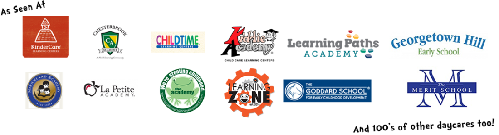
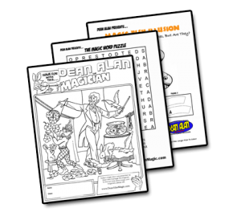
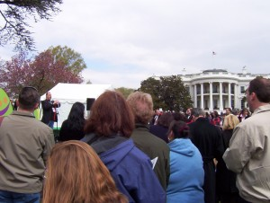
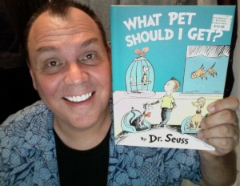

Educational Magic Programs Aligned With Learning Outcomes For Schools, Libraries and more!
Magic Shows can be used as an incredible teaching tool, not just a fun activity. With the right subject matter they can help kids learn and enhance your current curriculum. Dean Alan the Magician is a full-time professional with nearly 30 years of experience delivering educational, jaw-dropping, laughter-filled magic shows across the U.S.. He recently added the Nashville area and brings his wonderful storehouse of educational shows to kids, students, teachers, and families here!. Whether you need an educational magic show that reinforces reading, science, or a just-for-fun performance that keeps kids amazed and engaged, Dean Alan has the perfect act for your event.
2026 Fall & Winter Magic Shows, Extremely Limited Availability
Your students deserve a seasonal show they’ll never forget, and this year, I’m offering three blockbuster programs:
- The Fall‑O‑Ween Magic Show
- Turkey Kadabra
- A Very Merry Magic Show
But here’s the truth: Fall and Winter dates disappear FAST. Schools and libraries book these shows months in advance, and once the calendar fills… that’s it.
If you want one of these seasonal shows, you must lock in your date now, waiting almost always means missing out.
Ready to reserve your spot?
Reach out today and secure your show before the season sells out.
For Daycares, each month we have a different show!!! For Elementary Schools, click the READING SHOW link.

For three decades, Dean Alan the Amazing Magician has been conjuring up smiles, laughter, and looks of amazement, on the faces of kids and adults all over the Washington D.C. area (and beyond). NOW he is in Nashville! Thousands of shows equals hundreds of thousands of happy people who have experienced his special brand of magic.
NOW is the time to join the multitudes of clients who book the Amazing Magician Dean Alan, again and again. All you have to do is start with the first show! 🙂 There are two ways to proceed: Call us 703-404-8902, or hit the contact link!
To Get More Detailed Information on Shows and Pricing.
Just fill out the form to the right. By doing so you’ll be taken to our e-promo-kit with more in-depth information on all the shows. Plus, just for signing up for the e-promo-kit, we will hook you up with some fun activity pages.
You’ll get a Coloring Page, A Word Puzzle and a Magic Fish Illusion. All FREE just for signing up for the e-promo-kit! 




Places He’s Performed
Dean Alan has been the premier Kidshow entertainer in the Mid-Atlantic region and now he is quickly becoming the go-to magician in the Nashville TN area! During his career he has presented thousands of shows. Dean has performed for nearly every major daycare chain in the country as well as hundreds of independent and church daycares as well. However he’s not just a daycare magician. He performs at elementary schools, libraries, community centers, and many more places all over the state of Virginia, Maryland, D.C. North Carolina, South Carolina, Tennessee, Missouri, Kentucky, and beyond. Below is just a sampling of places Dean Alan has performed at.
Daycares
- Kindercare ( VA,MD,NC, TN, MN)
- Minnieland
- LaPetite Academy (VA, MD, TN)
- Chesterbook Academy (VA,NC)
- Children of America
- Childtime
- Kiddie Academy (VA, MD, TN)
- Academy Child Dev. (TN)
- and many more
Elementary Schools
- Prince William Cty, VA
- Loudoun Cty, VA
- Fairfax Cty, VA
- Arlington, VA
- Stafford Cty, VA
- Fauquier Cty, VA
- Page Cty, VA
- Virginia Beach, VA
- and many more
Other Events - Potomac Mills Mall
- The White House Easter Egg Roll
- Spotsylvania Towne Center Mall
- Springfield Town Center
- FairOaks Malls
- The British Embassy
- Lucketts Fair
- Loudoun Cty Libraries
- Locust Shade Park Amphitheatre
- Weinberg Center for the Arts
- Stewart Theater
- and many more places
Who Is Dean Alan?

Dean Alan has been one of the busiest and best Northern Virginia magicians. Now he extends his performing area to the middle of the country. He performs regularly in Virginia, Maryland, D.C. and all over the Mid-Atlantic Region, as well as all over TN, Kentucky, Missouri, Ohio and more.

His interest in magic began many years ago when he saw the Tony Curtis movie about Harry Houdini. Only days after seeing the movie he went to the library and began to check out books on magic and magicians. Shortly after this interest began, he and his family moved to a horse farm in the country. With no neighbors nearby, it gave plenty of time to practice and learn magic. Before long he was doing shows at his high school, at fairs and festivals and special events.
Dean Alan is the most popular magician at daycares in the region. When he presents educational assemblies, he performs as The Wizard of Reading. In the past you could catch Dean Alan at area libraries, community centers, recreational centers and parks and more.
WHERE CAN YOU SEE DEAN ALAN LIVE????